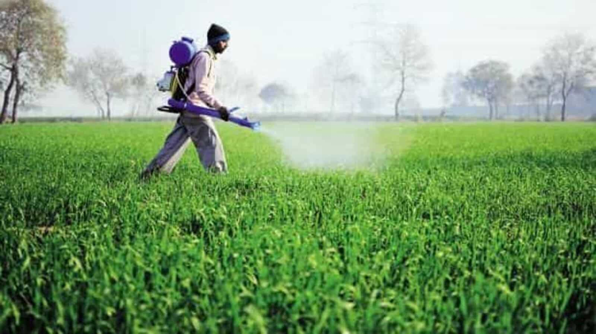

SOIL
Soil is an important matter for cultivatiom of crops.
Soil supplies all the important factors for the growth of crop plants.
The yielding potential is largely dependent on the soil in which the crops are grown.
There are different types of soil for crop cultivation.
1.Red soil-Most of the part in Telangana state is covered by red soils which is about 48%.
They cover large part in Mahabubnagar,Nalgonda,Karimnagar,Khammam.....
The lowermost area of red soil is dark in color and very fertile, while the upper layer is sandy and porous.
Thus, proper use of fertilizers and irrigation yields high production of cotton, wheat, rice, pulses, millets, tobacco, oil seeds, potatoes, and fruits.2.Black soil-these soils account for 25% of total area of telangana.
Mostly found in Adilabad,Nizamabad,Rangareddy....Wheat, Groundnut and cotton are few of the crops which require black soil for their growth.
Cotton requires highly fertile black soil for maximum production.
3.Laterite soils-covers 7% of the area.They are found in Medak and khammam districts.
Laterite soils are generally suitable for most of the dryland crops.
It is mainly cultivated with coconut, arecanut, banana, tapioca, vegetables, yams, pepper, pineapple, fruit trees etc.
4.Alluvial soils-These soils are formed by deposition of sediments by river.
The soil is generally covered by tall grasses and forests, as well as a number of crops, such as rice, wheat, sugarcane, tobacco, maize, cotton, soybean, jute, oilseeds, fruits, vegetables, etc.
5.Peaty and Marshy soils-these soils are formed by plants growing in the humid regions under permanently waterlogged conditions.
They are found in Kerala, Orissa, West Bengal (Sundarbans) and along the South-East coast of Tamil Nadu.
Where properly drained and fertilized, these soils often produce a very good rice crop.

PESTICIDES
Pesticides are substances that are meant to control pests.This includes herbicide, insecticide, nematicide, molluscicide, piscicide, avicide, rodenticide, bactericide, insect repellent, animal repellent, microbicide, fungicide, and lampricide.Pesticide is less harmful if it controls what we want to control and does not harm other creatures in the environment. Pesticides that don't stay in the environment long are usually less harmful than those that stay in the soil, water, or air for a long time.Few of the listed pesticides are less harmful
1.Bt - Bacillus thuringiensis controls some caterpillars and beetle larvae.
2.Boric Acid - will control ants, cockroaches, silverfish, and termites.
3.Diatomaceous Earth - a natural pesticide dries pests out, which is why it's effective on pests that need a lot of water, such as slugs, millipedes, and sowbugs.
4.Insecticidal Soap - will control soft-bodied insects such as aphids, leafhoppers, scales, and whiteflies.
Iron Phosphate - will control slugs and snails. Very safe and very effective.
5.Neem (Azadirachtin) - will control gypsy moths, leafminers, thrips, caterpillars, and mealybugs.
6.Traps - Not all traps are created equal! Traps, like pantry traps, are excellent for controlling insects.
Please keep in mind that just because a pesticide is "organic" or derived from a natural product, does not mean that it is safer than a synthetic chemical. It is your responsibility to read the pesticide label and follow all directions on it.
GOVERNAMENT SCHEMES
The main aims of this schemes are to supplement the financial needs of the farmers in procuring various inputs to ensure proper crop health and appropriate yields, and commensurate with the anticipated farm income. Majority of the farmers are small and marginal farmers and farming is the sole source of livelihood to them.
There are many govt schemes:
Rythu Bandhu Scheme (AISS)
Rythu Bandhu - Farmers Group Life Insurance Scheme: (Rythu Bhima)
Soil Health Card Scheme (SHC)
Subsidy Seed Distribution.
Seed Village Programme.
Farm Mechanization.
Rastriya Krishi Vikas Yojana (RKVY)
Rainfed Area Development Scheme (RAD) under national mission for. sustainable agriculture and many more...